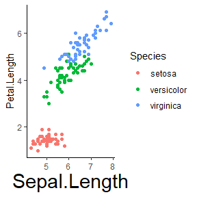

Overview
This package is an add-on to ggplot2, the R package for creating awesome graphics, which is based on The Grammar of Graphics. ggplot2 has changed my life as a scientist and developer. However, I have terrible memory and I forget the same commands again and again. Like, how do you rotate axis labels again? Or how do you hide the legend…? So I often end up searching the net for help and then I copy and paste the solution I find into my R script. And I know at least one more person who does this, too. Eventually, I wondered whether we couldn’t save this extra step and just talk to ggplot in natural language (similar to a Google search query). So, I wrote this package that lets us issue natural language commands, which then are translated into ggplot commands. This is very likely totally bonkers, and this is how it looks (watch the gg_ commands below):
ggplot(data=cars,aes(x=speed, y=dist))+geom_point()+
gg_("rotate x-axis labels by 90 degrees")+
gg_("increase font size on x-axis label")
Disclaimer
I am pretty sure that this package violates fundamental principles of ggplot2. First and foremost, it would be much wiser to just study and learn the respective commands instead of relying on fuzzy and not well-defined natural language commands. Second, this package doesn’t rely on fancy deep learning or other AI technology. It’s a simple keyword matching algorithm. If someone fancies to replace this with a better approach, please do so. Contributions to this package are more then welcome!
Usage Examples
This package has two basic modes of operations. Either you use the gg_(...) command to generate ggplot2 elements from natural language and chain them directly to your plotting commands (for lazy people), or you use the package as a reminder of the command and let the package print out the command, which you then copy and paste to your code (safer option). In the following, I will give you a few examples of how the package could be used. Assume, we start off with basic 2D plot of Fisher’s classic iris data:
Now, if we want to hide the legend and don’t remember the ggplot command to do so, we can use the gg_() short-hand to express our request in natural language:
ggplot(data=iris,
mapping=aes(x=Sepal.Length,
y=Petal.Length, color=Species))+
geom_point()+
gg_("hide legend")
Or, say we want to rotate the labels of the x axis and rename the axis label:
ggplot(data=iris,
mapping=aes(x=Sepal.Length,
y=Petal.Length, color=Species))+
geom_point()+
gg_("rotate x-axis labels by 90°")+
gg_("set x-axis label to 'Length of Sepal'")
Or,
ggplot(data=iris,
mapping=aes(x=Sepal.Length,
y=Petal.Length, color=Species))+
geom_point()+
gg_("double the font size on the x-axis label")
Or,
ggplot(data=iris,
mapping=aes(x=Sepal.Length,
y=Petal.Length, color=Species))+
geom_point()+
gg_("add 'Hello World' as plot title")+
gg_("paint the plot title in a beautiful orange")+
gg_("set the color of the x-axis label to blue")If you want to go the safer route, just use the ggx package as personal assistant that helps you find solutions to common graph formatting problems, like in the following:
Or,
Or,
gghelp("How can I increase the font size on the x axis?")
#> theme(axis.title.x=element_text(size=rel(2)))Since ggx is matching keywords, it allows for some variation in how the question is put:
gghelp("I want to remove my plot legend")
#> theme(legend.position = "none")
gghelp("Please hide the legend")
#> theme(legend.position = "none")
gghelp("Get rid of that stupid legend")
#> theme(legend.position = "none")Colors and numbers are parsed and inserted into the final commands:
Other Solutions
There is a nice little package called ggeasy that addresses the same problem. However, it defines yet another set of commands, like this:
But I keep forgetting those, too ;)
Disclaimer (continued)
This package is just a quick and dirty implementation of a keyword matching algorithm. Do not expect any deeper language processing. Neither is this program a therapist (see Eliza or others). Also, the program doesn’t aim for completeness. It just knows a couple of commands that I tend to forget. Don’t be mad if you hate the package. Just ignore it and write beautiful ggplot code without it. If you like the package, think about contributing to it. Add more questions, keywords, etc. I welcome any contribution, preferably via pull requests on github.